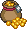
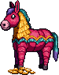
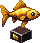

World events
Four events built on what players have loved so far (the Yard raid, the open bosses, the 2X events): something the whole server hears about from CASINO, goes to together, where every level helps, and is paid by what you put in. Each is shown as it would look in the world, with the windows and trackers that go with it, in the UI kit. The art for the star, the Living Vein, the poster and the beans is new (PixelLab); everything else is the game's own.
🔍 In detail: Shooting Stars, Wanted! and the Jackpot Thief →
🌠 Shooting Stars
from OSRS · runs itself, a few times a day · small to buildA star crashes somewhere in the world. CASINO calls roughly where, and whoever finds it mines it down tier by tier: the higher the tier, the higher the Mining it needs, so a crowd of all levels works it together as it shrinks. Stardust from every swing buys things at a star shop, and one rare swing turns up a star pet.
 Shooting star · Tier 6The Gloam, by the old well · Mining 60
Shooting star · Tier 6The Gloam, by the old well · Mining 60CASINO: 🌠 A SHOOTING STAR just came down in the Gloam, near the old well. Tier 8: Mining 80 to start. Everybody else can have it at tier 5.
CASINO: 🌠 The star in the Gloam is down to tier 6. Eleven miners on it.
You mine some stardust (×3). Your Mining is high enough for this tier.
The star · tier 662% left of this tier| Tier | Mining | Stardust a swing | Size |
|---|---|---|---|
| 9 | 90 | 6 | works for 12 min with a crowd |
| 6 now | 60 | 4 | |
| 3 | 30 | 2 | |
| 1 | 10 | 1 | then it's gone |
- Why it fits: the Yard-raid feeling in a smaller dose, several times a day, with no admin needed. It uses the Wyrm's scheduler.
- Stakes: none. It's a gift you have to go and find, and the first to arrive start on the highest tier.
📜 Wanted!
from WoW rare spawns and RDR2 bounties · runs itself, every hour · small to buildEvery hour CASINO names one monster somewhere as Wanted. It's a tougher, named version of something that lives there, with a red plate over its head. Everyone who hurts it shares the bounty by damage, like the open bosses, with the same after report. If nobody gets it in time, it walks off and the next poster goes up.
 Wanted: Old Tom TuskThe Boneyard · 40,000 bounty, shared · 38 min left
Wanted: Old Tom TuskThe Boneyard · 40,000 bounty, shared · 38 min leftCASINO: 📜 WANTED: Old Tom Tusk, a boar the size of a car, last seen in the Boneyard. 40,000 tickets to whoever brings him down, shared. One hour.
CASINO: 📜 Old Tom Tusk is half dead. Six hunters on him.
The bounty boardin the Yard, and in your quest log
40,000 · SHARED
A boar the size of a car, last seen in the Boneyard. Twice the health, hits like a truck, drops like a piñata.
| Grizzled Frostwolf | taken · 9 hunters |
| The Tax Wraith | got away |
| Captain Crabcake | taken · 4 hunters |
- Why it fits: the open bosses' shared kill and report, on a clock, on maps people already know. Every hour the server has somewhere to meet.
- Stakes: it gets away; the bounty grows by a quarter for the next one.
⛏️ The Living Vein
from OSRS Wintertodt and Tempoross · the Yard raid, for skillers · medium to buildThe ground shakes under the Quarry, a five-minute countdown in CASINO's voice, then a golem of living ore climbs out. It can only be hurt with a pickaxe (Mining sets how hard you hit). Every swing knocks rocks down on the pit props holding the Quarry up, and woodcutters have to keep repairing them with planks, or the roof comes in. Win and everyone is paid by what they did, mining or propping. Lose and the Quarry is closed for an hour.
 Pit props · 3 of 4 standingProp 2 is cracking: bring planks!
Pit props · 3 of 4 standingProp 2 is cracking: bring planks!CASINO: ⛏️ The ground under the Quarry is moving. Something in the rock is waking up. 2 minutes.
CASINO: ⛏️ THE LIVING VEIN IS UP. Pickaxes to the Quarry. Axes too: the props won't hold themselves.
 The Living Vein is downthe report, like the raid's
The Living Vein is downthe report, like the raid's| Who | What they did | Paid |
|---|---|---|
| bootypaper | 2,140 damage | 18,400 + Living Vein Ore ×6 |
| zwades | 1,860 damage | 16,100 + Living Vein Ore ×5 |
| heartlarva | 42 props repaired | 12,600 + Heartwood ×4 |
| a level 12 | 90 damage | 1,500 (the floor) |
- Why it fits: the raid's shape (countdown, crowd, report, a lose state) for players who'd rather skill than fight, and it gives two skills a job at once.
- Also: the same frame gives the Elder Treant (axes, props become lanterns fishers keep lit) and the Old One (a sea monster reeled in by everyone's Fishing).
🫘 The Stalk Market
from Animal Crossing's turnips · a weekly gamble · small to buildEvery Sunday Bom sells beans. All week he'll buy them back at a price that changes twice a day, and it can soar or crash. On Sunday the beans rot. Each week follows one of four hidden patterns (a spike, a slow fall, a double bump, random), all worked out on the server from the week's seed. So it's a real read of the market, not a coin flip, and the seed is revealed afterwards. It's pure gambling on a clock, which is the heart of this crowd.
 Bom's Beans
Bom's Beans
you hold 400 · rot SundayCASINO: 🫘 Bom is buying beans at 312 this afternoon, the highest anyone's seen this week. Just saying.
CASINO: 🫘 zwades sold 1,000 beans at 312. Somebody tell him it might go higher.
| Pattern | What it does | How often |
|---|---|---|
| The Spike | falls, then leaps to 2x-6x one day mid-week, then drops | 1 in 4 |
| The Bleed | falls all week. Sell Monday or eat it | 1 in 4 |
| Double Bump | two smaller rises, 1.2x-1.6x | 1 in 4 |
| Random | anything, 0.9x-1.4x | 1 in 4 |
- Why it fits: a gamble with a week of anticipation and a group chat full of "sell now?". It sinks tickets on a Bleed week and creates huge winners on a Spike. And it brings people back twice a day to check the price.
- Stakes: real tickets. Expected return a little under 100%, like the casino band.
Round two: fun and simple
The owner: "these should be fun, and fairly simple". Every one of these explains itself in one CASINO line, is over in a few minutes, and anybody can join from level 1. The chaos is the point.
🪅 Piñata Party
from party games · 3 minutes · tiny to buildA giant piñata drops into the Yard. Everyone whacks it with whatever they're holding: sword, pickaxe, wand, fishing rod. It has more health the more people turn up. When it bursts, loot rains out for everyone who hit it, each person gets their own pile (no stealing), and whoever lands the last hit gets a bonus and a title.

Piñata · 31% leftThe Yard · 18 whacking · 1:52 leftCASINO: 🪅 A PIÑATA just fell out of the sky into the Yard. Hit it with anything. It's full.
CASINO: 🪅 heartlarva broke it! It's raining tickets.
Every hitter gets a pile; more hits, bigger pile (with a floor, so one swing still counts). The last hit adds a Piñata Smasher title roll.
- Why it's fun: it's a mob of people wailing on a donkey. No skill needed, huge payoff moment, over in three minutes.
- Runs: at random a few times a day, or when you press it (or a sub goal is hit).
💰 The Jackpot Thief
from Mario's coin thieves and RS3's "Evil Chicken" · 5 minutes · small to buildA goblin grabs a fistful of the Jackpot and runs. He's quick, weaves around the map, and every hit knocks coins out of his sack onto the ground for anyone to grab. Every minute he hops to another map and CASINO says where. Whoever lands the last hit keeps the rest of his sack; if he gets away, it goes back in the Jackpot.
 Jackpot Thief · the GloamSack 62% full · hops in 0:34
Jackpot Thief · the GloamSack 62% full · hops in 0:34CASINO: 💰 STOP, THIEF! A goblin just robbed the Jackpot and ran into the Gloam. Everything he drops is yours.
CASINO: 💰 He's hopped to the Boneyard! His sack's lighter already.
- Why it's fun: a chase. Everyone running the same way, coins spraying, "HE'S IN THE BONEYARD" in chat. Hitting him is easy; keeping up is the game.
- Simple: one monster that runs from the nearest player instead of at them, drops tickets when hit, and moves map on a timer.
- Stakes: the sack goes back to the Jackpot if he escapes, so the Jackpot is never out of pocket.
👑 King of the Throne
from king-of-the-hill game modes · 5 minutes · small to buildA golden throne appears in the middle of the Yard. Sit on it and you earn tickets every second. Anyone standing next to it can shove you off (a two-second push, and you get bumped a few tiles away) and sit down themselves. CASINO calls every takeover. Most seconds on the throne at the end wins the crown.
 King of the Throne · 2:411. zwades 48s · 2. bootypaper 31s · 3. heartlarva 22s
King of the Throne · 2:411. zwades 48s · 2. bootypaper 31s · 3. heartlarva 22sCASINO: 👑 bootypaper shoves zwades off the throne! Long live the king (for now).
CASINO: 👑 zwades takes it straight back. 48 seconds and counting.
 The crownfinal standings
The crownfinal standings| Seconds | Paid | |
|---|---|---|
| 👑 zwades | 112 | 11,200 + "Rightful King" title |
| bootypaper | 94 | 9,400 |
| heartlarva | 57 | 5,700 |
- Why it's fun: pure chaos and trash talk, the whole Yard fighting over one chair. Perfect on stream.
- Simple: one object, one "shove" action, a per-second counter.
🎣 The Great Catch
from Stardew Valley's fishing derby · 15 minutes · small to buildA fishing tournament, anywhere there's water. Every fish you land scores points (rarer fish score more), and CASINO reads out the top five every few minutes. In the last two minutes a Golden Carp starts biting at one random spot, worth ten times anything else. The top three win big; everyone who caught something gets a small prize.

The Great Catch4:12 left · 23 anglers| # | Angler | Fish | Points |
|---|---|---|---|
| 1 | heartlarva | 34 · best: swordfish | 1,280 |
| 2 | zwades | 41 · best: bluefin | 1,105 |
| 3 | bootypaper | 28 · best: mackerel | 860 |
| … | you | 12 | 310 14th |
CASINO: 🎣 THE GREAT CATCH has started! Fifteen minutes, any water, rarer fish score more.
CASINO: 🎣 Two minutes left, and something gold just bit at the Fishing Dock...
- Why it's fun: a race with a live leaderboard, and a last-minute twist that means anyone can still win.
- Simple: it only counts catches that already happen; the Golden Carp is one fishing spot with a special fish.
- The same shape gives a Gold Rush (mining) or a Cook-Off (cooking) for variety.
🥔 Hot Potato
from the party game · 5 quick rounds · tiny to buildA hot potato lands on someone in the Yard. Get rid of it: click anyone within three tiles and it jumps to them. The fuse is secret (30 to 90 seconds). When it pops, whoever's holding it is "singed" (a sooty face for ten minutes, nothing lost) and everyone who touched it that round splits a pot. Five rounds, a new victim each time.
CASINO: 🥔 zwades is holding the HOT POTATO. Somebody take it off his hands. Or don't.
CASINO: 💥 It POPPED on andyreid! Everyone else splits 6,000.
- Why it's fun: panic. People running away from whoever has it, people deliberately walking up to throw it back. Great on stream.
- Simple: one flag on one player, one "pass" click, a hidden timer.
- Fair: the fuse is decided by the server from a seed, like the casino games, and nobody can see it.
❓ CASINO Trivia
from Twitch chat games and HQ Trivia · 10 minutes · tiny to buildCASINO asks a question in chat every minute for ten minutes: the game, the casino, the NFL, the community. First correct answer typed wins. Right answers in a row build a streak bonus. It needs no map at all, so people can play from anywhere, even mid-fight.
CASINO: ❓ TRIVIA (question 4 of 10): What does the Ice Man cast on people fighting him? First right answer wins 2,000.
bootypaper: frost bolt
heartlarva: freeze??
zwades: deep freeze
CASINO: ✅ zwades got it: DEEP FREEZE. 2,000 tickets. That's three in a row: streak x1.5.
CASINO: ❓ Question 5 of 10: Which NFL team has won the most Super Bowls? (Ties count.)
- Why it's fun: it's the thing Twitch chat already does, with tickets on it. Anyone can win one.
- Simple: a question list, and a check on chat lines.
- You could write the questions yourself; I'd seed it with 200 about the game.